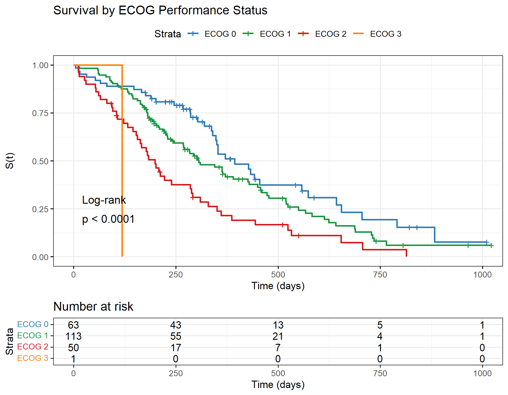

systemfonts and textshaping have been compiled with different versions of Freetype. Because of this, textshaping will not use the font cache provided by systemfonts10 Comparing Survival Experiences
A central question in many studies is whether two or more groups differ in their survival experience. This chapter presents the major non-parametric tests for comparing survival curves.
10.1 The Log-Rank Test
The log-rank test (Mantel–Cox, 1966) is the standard non-parametric test for comparing two or more survival curves. It is most powerful under the proportional hazards alternative.
10.1.1 Two-Sample Log-Rank
At each observed event time \(t_j\), construct a \(2 \times 2\) table:
| Events | Non-events | Total | |
|---|---|---|---|
| Group 1 | \(O_{1j}\) | \(n_{1j}-O_{1j}\) | \(n_{1j}\) |
| Group 2 | \(O_{2j}\) | \(n_{2j}-O_{2j}\) | \(n_{2j}\) |
| Total | \(d_j\) | \(n_j - d_j\) | \(n_j\) |
Expected events in group 1 at \(t_j\): \(E_{1j} = d_j \cdot n_{1j}/n_j\)
Test statistic:
\[U = \sum_j (O_{1j} - E_{1j}), \qquad V = \sum_j \frac{n_{1j} n_{2j} d_j (n_j - d_j)}{n_j^2 (n_j - 1)}\]
\[\chi^2_{LR} = U^2 / V \sim \chi^2_1 \quad \text{under } H_0: S_1(t) = S_2(t)\]
10.1.2 Mantel–Haenszel Form
The Mantel–Haenszel statistic is equivalent to the log-rank test:
\[\chi^2_{MH} = \frac{[\sum_j(O_{1j} - E_{1j})]^2}{\sum_j V_j}\]
10.2 Weighted Tests
The general weighted log-rank statistic is:
\[\chi^2_w = \frac{[\sum_j w_j(O_{1j}-E_{1j})]^2}{\sum_j w_j^2 V_j}\]
| Test | Weights \(w_j\) | Most powerful against |
|---|---|---|
| Log-rank (Mantel-Cox) | \(1\) | Proportional hazards |
| Wilcoxon (Breslow–Gehan) | \(n_j\) | Early differences |
| Tarone–Ware | \(\sqrt{n_j}\) | Intermediate |
| Fleming–Harrington(\(\rho\)) | \([\hat{S}(t_j^-)]^\rho\) | Late differences (\(\rho=1\)) |
# Log-rank (rho = 0)
lr <- survdiff(Surv(time, status==2) ~ sex, data = lung, rho = 0)
# Wilcoxon / Breslow (rho = 1)
wb <- survdiff(Surv(time, status==2) ~ sex, data = lung, rho = 1)
cat("=== Log-Rank Test ===\n"); print(lr)=== Log-Rank Test ===Call:
survdiff(formula = Surv(time, status == 2) ~ sex, data = lung,
rho = 0)
N Observed Expected (O-E)^2/E (O-E)^2/V
sex=1 138 112 91.6 4.55 10.3
sex=2 90 53 73.4 5.68 10.3
Chisq= 10.3 on 1 degrees of freedom, p= 0.001 cat("\n=== Wilcoxon (Breslow) Test ===\n"); print(wb)
=== Wilcoxon (Breslow) Test ===Call:
survdiff(formula = Surv(time, status == 2) ~ sex, data = lung,
rho = 1)
N Observed Expected (O-E)^2/E (O-E)^2/V
sex=1 138 70.4 55.6 3.95 12.7
sex=2 90 28.7 43.5 5.04 12.7
Chisq= 12.7 on 1 degrees of freedom, p= 4e-04 10.3 k-Sample Test
For \(k > 2\) groups, the generalised Mantel–Haenszel statistic:
\[\chi^2 = \mathbf{U}^T \hat{\boldsymbol{\Sigma}}^{-1} \mathbf{U} \sim \chi^2_{k-1}\]
lr_ecog <- survdiff(Surv(time, status==2) ~ ph.ecog, data = lung)
print(lr_ecog)Call:
survdiff(formula = Surv(time, status == 2) ~ ph.ecog, data = lung)
n=227, 1 observation deleted due to missingness.
N Observed Expected (O-E)^2/E (O-E)^2/V
ph.ecog=0 63 37 54.153 5.4331 8.2119
ph.ecog=1 113 82 83.528 0.0279 0.0573
ph.ecog=2 50 44 26.147 12.1893 14.6491
ph.ecog=3 1 1 0.172 3.9733 4.0040
Chisq= 22 on 3 degrees of freedom, p= 7e-05 lung2 <- lung |> filter(!is.na(ph.ecog))
km_ecog <- survfit(Surv(time, status==2) ~ ph.ecog, data = lung2)
ggsurvplot(km_ecog,
data = lung2,
pval = TRUE,
pval.method = TRUE,
conf.int = FALSE,
risk.table = TRUE,
legend.labs = paste("ECOG", sort(unique(lung2$ph.ecog))),
palette = c("#2C7BB6","#1A9641","#D7191C","#FF7F00"),
xlab = "Time (days)", ylab = "S(t)",
title = "Survival by ECOG Performance Status",
ggtheme = theme_bw(base_size = 13))
10.4 Comparison of Two Life Tables
For two independent cohorts with complete mortality data, we test \(H_0: q_{1x} = q_{2x}\) at each age \(x\) using the normal approximation for proportions.
Choice of Test
Use the log-rank test when you expect proportional hazards (constant hazard ratio over time). Use Wilcoxon when group differences are largest early in follow-up. If curves cross (non-proportional hazards), no single weighted log-rank test is uniformly powerful — consider max-combo tests or the restricted mean survival time approach.
Quotes to Inspire
“Errors using inadequate data are much less than those using no data at all.”
— Charles Babbage